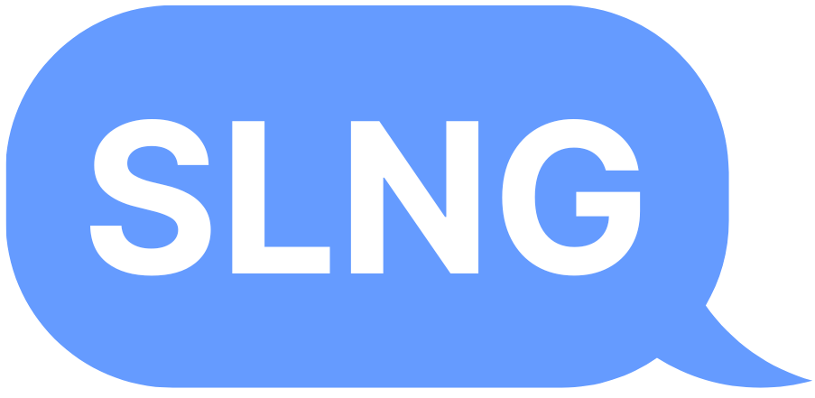

<!DOCTYPE html>
<html lang="en">
  <head>
    <title>SLNG 2.0</title>
    <link rel="icon" href="../favicon.ico">
    <link rel="stylesheet" href="./css/style.css">
    <script src="https://kit.fontawesome.com/195fec1869.js" crossorigin="anonymous"></script>

    <!-- Font: Inter -->
    <link rel="preconnect" href="https://fonts.googleapis.com">
    <link rel="preconnect" href="https://fonts.gstatic.com" crossorigin>
    <link href="https://fonts.googleapis.com/css2?family=Inter:ital,opsz,wght@0,14..32,100..900;1,14..32,100..900&display=swap" rel="stylesheet">

    <!-- To fix chrome dev tool responsive preview -->
    <meta name="viewport" content="width=device-width, initial-scale=1, minimum-scale=1">
  </head>

  <body>
    <aside class="nav">
      <a href="./"></a>
      <ul class="nav__list">
        <li class="nav__item">
          <a href="#">Saved</a>
        </li>
        <li class="nav__item">
          <a href="#">Settings</a>
        </li>
      </ul>
    </aside>

    <div class="app">
      <main>
        <section class="chat-list">
        </section>
        <form class="chat-box">
          <textarea id="chat-box__input" type="text" placeholder="Message SLNG"></textarea>
          <button class="chat-box__submit" type="submit"><i class="fa-regular fa-hand-point-up fa-xl"></i></button>
        </form>
      </main>
    
      <footer>
        <aside class="footer__credits">SLNG 2.0 made by David Lim. Credits to the rest of CS 160 Team 102-7 @ UC Berkeley 2024 as well for the original version.</aside>
      </footer>
    </div>
    <script src="js/app.js"></script>
  </body>
</html>